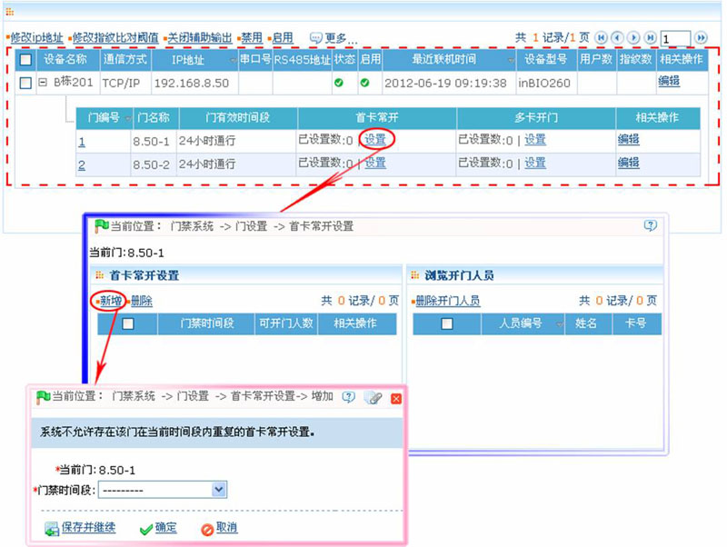
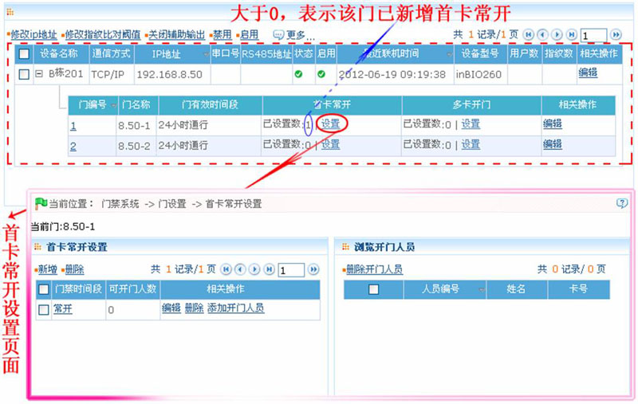
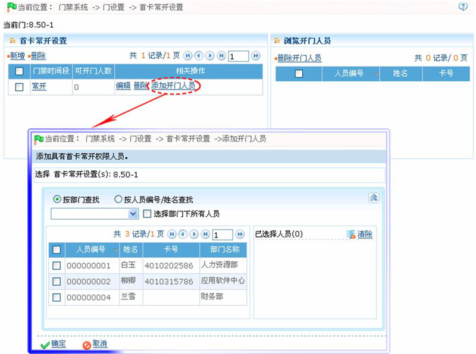
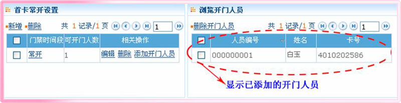

6.3.2 首卡常开
首卡常开：在指定时间段内，当有首卡常开权限的人员第一次验证通过后，门将常开，有效时间段结束后门将自动恢复关闭。
用户可以对某个具体的门进行首卡常开设置，该设置包含了门、开门的时间段和具有首卡常开的人员。一个门可以进行多个时间段内的首卡常开设置。每个门的界面上均会显示当前已存在的首卡常开设置的数量。进行首卡常开设置时，对于每条记录而言，新增或者编辑时，“当前门”无需修改，只需要选择时间段即可。记录添加成功后，再针对某个首卡常开设置的记录添加能开门的人员。界面右侧能够浏览某个首卡常开设置中开门人员的同时也能够对当前人员进行删除，以使某些人员不再具有首卡常开的权限。
-
 新增首卡常开
新增首卡常开
 备注：门禁时间段设置，请参见6.1 门禁时间段。
备注：门禁时间段设置，请参见6.1 门禁时间段。
1、在门管理页面上，单击门所在行的“首卡常开”下的【设置】按钮，进入首卡常开设置页面，然后单击该页面上的【新增】按钮，进入新增首卡常开页面，如下图所示：

门禁时间段：单击按钮，在弹出门禁时间段下拉框中，选择门禁时间段。
（2）、设置完成后，单击【确定】按钮保存，并返回首卡常开设置页面。
-
添加开门人员
为首卡常开添加具有开门权限的人员。该人员必须首先具有门禁权限方可进行首卡开门。
1、点击【门禁】 【门设置】，进入【门管理】页面，单击对应设备的门所在行的“首卡常开”下的【设置】按钮，进入首卡常开设置页面：
【门设置】，进入【门管理】页面，单击对应设备的门所在行的“首卡常开”下的【设置】按钮，进入首卡常开设置页面：

2、在首卡常开设置页面中，单击【添加开门人员】按钮，进入为首卡常开添加开门人员页面：

3、选择人员（人员的选择方法，请参见附录1 常用操作中的1. 人员选择），然后单击【确定】按钮，保存并返回首卡常开设置页面。（单击首卡常开所在行，可在页面右边的“浏览开门人员”框中，查看该首卡常开的开门人员，如下图所示：）

 注意：对于处在常开状态下的门，对该门具有门禁权限的人员连续5次验证通过（验证间隔不能超过5秒），将解除当前的常开状态，使门关闭；第5次验证后将变成正常验证；该功能必须在门有效时间段内使用；并且当天内设置的其他门常开时间区间以及首卡常开设置不再生效。
注意：对于处在常开状态下的门，对该门具有门禁权限的人员连续5次验证通过（验证间隔不能超过5秒），将解除当前的常开状态，使门关闭；第5次验证后将变成正常验证；该功能必须在门有效时间段内使用；并且当天内设置的其他门常开时间区间以及首卡常开设置不再生效。